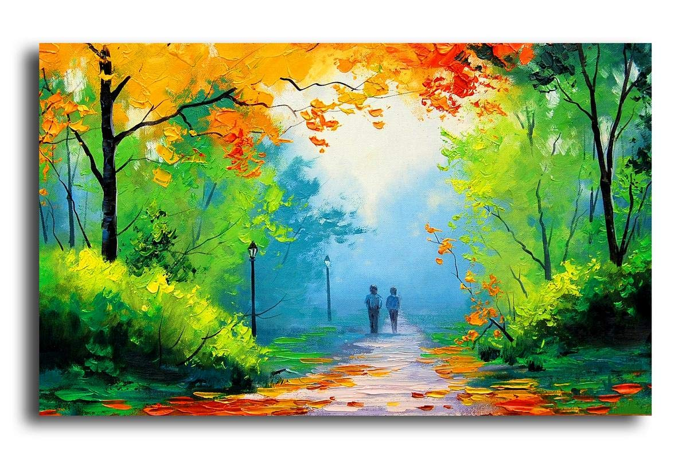

Drawing plays a big role in our development. It can help us learn to write and think creatively, develop hand-eye coordination, hone analytic skills, and conceptualise ideas. But drawing is rarely used as a tool for learning in schools.
My favourite hobby is Drawing
Drawing plays a big role in our development. It can help us learn to write and think creatively, develop hand-eye coordination, hone analytic skills, and conceptualise ideas. But drawing is rarely used as a tool for learning in schools.
Image result for why drawing is good for us
In addition to creativity, there are different benefits to drawing. We use our brains when we draw, and this not only releases endorphins, but helps build new connections and pathways. When drawing, we actively use both sides of our brain, the right for creativity, and the left for logical thinking.
My favourite books are:


My Works


My Inspiration
Narendra Damodardas Modi is an Indian politician serving as the 14th and current Prime Minister of India since 2014. He was the Chief Minister of Gujarat from 2001 to 2014 and is the Member of Parliament for Varanasi.
He is my inspiration to do anyhting because I think he is very hardworking,polite and very helpful for his people.